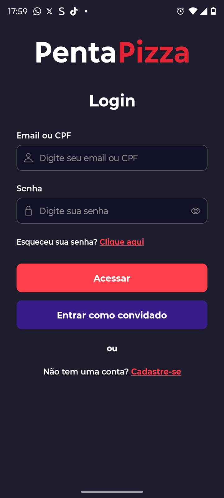
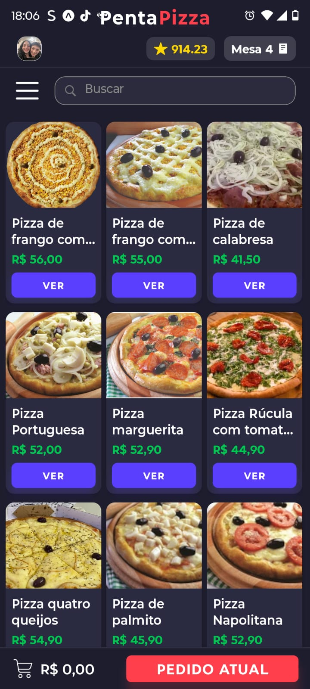

Projetos


Ver mais projetos ->
Descrição
E-mail: gabriel.c7744@gmail.com
Desenvolvedor de Sistemas com experiência em desenvolvimento full-stack, atuando em todas as etapas do ciclo de vida de software, desde a análise de requisitos até a entrega do produto final.
Possuo vivência em trabalho em equipe, colaborando na construção de soluções eficientes, organizadas e alinhadas às necessidades do usuário.


| Idioma | Nível |
|---|---|
| Português | Nativo |
| Inglês | Intermediário |
SESI 416 - São Bernardo do Campo
2023 até 2025
SENAI - Almirante Tamandaré
2024 até 2025
FATEC Luigi Papaiz - Diadema
2026 até 2028